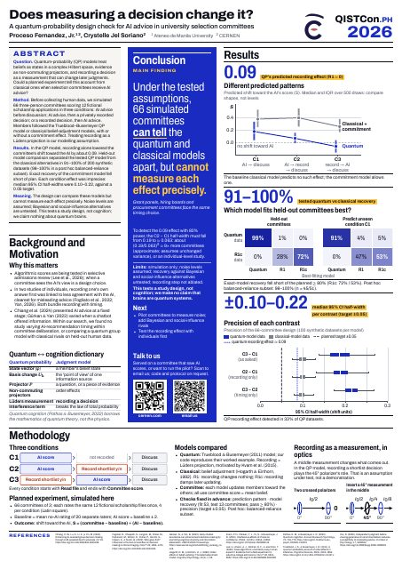

Poster presented · QISTCon.PH 2026
Does writing down a decision change how a committee uses AI advice?
Poster: Does measuring a decision change it? A quantum-probability design check for AI advice in university selection committees
Simulation of a planned study. No human participants yet.